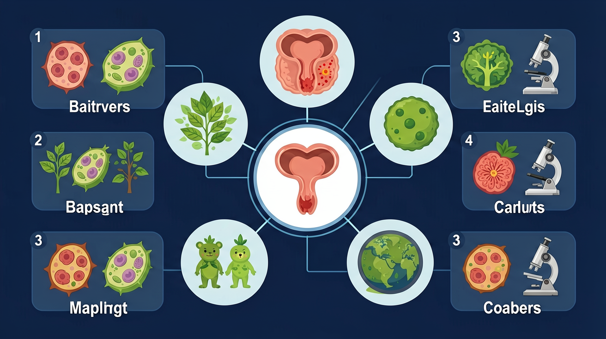

肾脏如何每天"清洗"180升血液，只留下1.5升尿液？探索人体最精妙的过滤系统

🎯 能说出泌尿系统的4个主要器官名称
🎯 能判断肾单位中过滤和重吸收发生的部位
🎯 能分析运动后尿液成分变化的生理原因
❓ 为什么尿尿有时候黄有时候白？
❓ 憋尿久了真的会伤肾吗？
❓ 汗水和尿液是一回事吗？
学完这一课，这些问题你都能自信地回答。
下列哪个不是泌尿系统器官？
原尿形成的部位是？
肾脏是产生尿液的核心器官。每个肾脏中约有100万个肾单位，每个肾单位由：
肾小球（过滤） + 肾小囊（收集原尿） + 肾小管（重吸收）球过滤，管重吸，尿液就这样形成了
| 成分 | 血液（有） | 原尿 | 终尿 |
|---|---|---|---|
| 水 | 有 | 有 | 有（少） |
| 葡萄糖 | 有 | 有 | 无（全被重吸收） |
| 氨基酸 | 有 | 有 | 无（全被重吸收） |
| 尿素 | 少量 | 有 | 有（大量浓缩） |
| 无机盐 | 有 | 有 | 有（部分） |
| 大分子蛋白质 | 有 | 无（不能过滤） | 无 |
| 红细胞 | 有 | 无（不能过滤） | 无 |
约180升 → 产生原尿 约180升 → 重吸收后产生终尿 约1.5升99% 的水被重吸收！说明肾脏极其高效。
将右列物质拖到对应的排泄途径下方
| 途径 | 排出物质 | 主要废物 |
|---|---|---|
| 泌尿系统 | 尿液 | 尿素（最主要）、多余水分、无机盐 |
| 皮肤（汗液） | 汗液 | 少量水、无机盐、微量尿素（辅助排泄） |
| 呼吸系统 | 呼出气体 | CO₂（有机物氧化的废气）、水蒸气 |
肾单位像微型过滤器，由肾小球和肾小管组成
血液经过肾小球过滤形成原尿，肾小管重吸收有用物质
汗液排泄盐分少，尿液排泄含氮废物多
肾皮质颜色深是因为布满肾小球毛细血管
多喝水相当于给肾脏'冲洗管道'
关于泌尿系统的说法正确的是
设计实验比较运动前后尿液量的差异
先独立作答，再点选项查看对错与错因。
人体形成尿液的器官是
下列不属于排泄途径的是
肾单位中过滤血液的结构是
尿液形成过程中，____能重吸收大部分水分和葡萄糖
答案：肾小管
肾小管通过主动运输重吸收有用物质
人体每天形成的原尿约____升，但最终排尿仅1-2升
答案：180
说明肾小管重吸收率高达99%
✅ 尿道是排尿通道，输尿管连接肾和膀胱
💡 名称相似混淆
✅ 需经输尿管暂存膀胱
💡 忽略储存环节
口诀：小球过滤小管吸，膀胱暂存排出去
类比：肾脏像净水器，血液是待过滤的自来水
球过滤、囊收集、管重吸180升 → 1.5升，99%水被回收尿素走肾、CO₂走肺、汗液走皮
（中考真题）剧烈运动后尿液减少主要是因为？
下列物质会被肾小管重吸收的是？
（迁移题）糖尿病患者尿液中出现葡萄糖，说明肾小管什么功能异常？